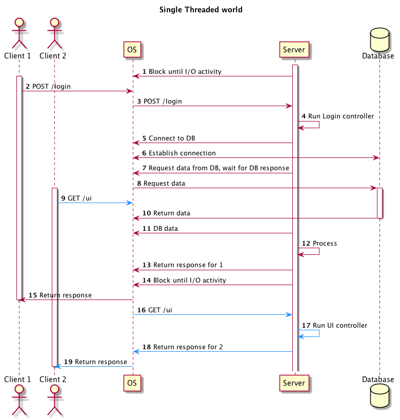
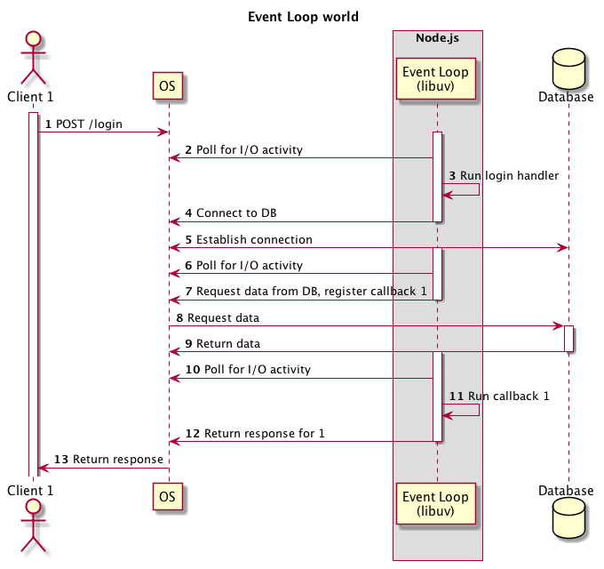
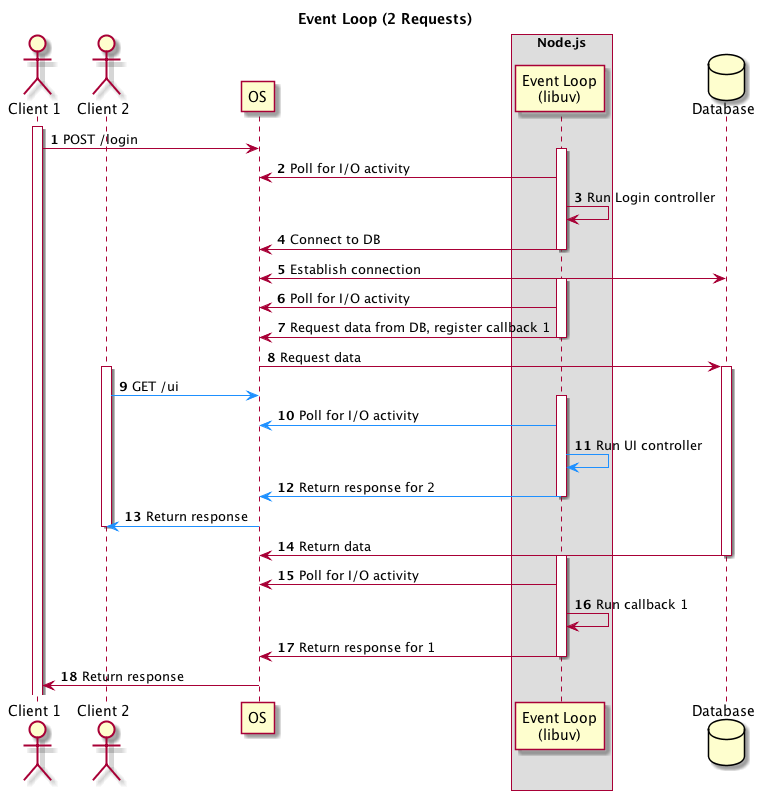

<!DOCTYPE html>
<html lang="en">
  <head>
    <meta charset="utf-8" />
    <meta name="viewport" content="width=device-width, initial-scale=1.0, maximum-scale=1.0, user-scalable=no" />

    <title>Javascript Deep Dive: Event Loop</title>
    <meta property="og:title" content="Javascript Deep Dive: Event Loop" />
    <meta property="og:type" content="website" />
    <meta property="og:image" content="https://ksami.github.io/presentations/featured-slide.jpg" />
    <meta property="og:url" content="https://ksami.github.io/presentations" />
    <link rel="stylesheet" href="./css/reveal.css" />
    <link rel="stylesheet" href="./css/theme/league.css" id="theme" />
    <link rel="stylesheet" href="./css/highlight/atom-one-dark.css" />
    <link rel="stylesheet" href="./css/print/paper.css" type="text/css" media="print" />

  </head>
  <body>
    <div class="reveal">
      <div class="slides"><section  data-markdown><script type="text/template">

# Javascript Deep Dive: Event Loop
</script></section><section  data-markdown><script type="text/template">
> If Javascript is single-threaded, how are asynchronous operations executed?
</script></section><section ><section data-markdown><script type="text/template">
## Components
</script></section><section data-markdown><script type="text/template">
### Engine
- Interprets/Compiles and executes Javascript code
    - V8 (Chrome, Node.js)
    - SpiderMonkey (Firefox)
    - Chakra (Edge)
    - JavaScriptCore (Safari)
</script></section><section data-markdown><script type="text/template">
### Host Environment
- Provides additional objects and functions on top of the Javascript language core
- Browser, server, smartwatch etc.
</script></section><section data-markdown><script type="text/template">
#### Web APIs (Browsers)
- [APIs provided by the browser](https://developer.mozilla.org/en-US/docs/Web/API) as globals
    ```js
    //Timers
    setTimeout(() => {/* do something */}, 1000)
    //HTTP Request
    fetch('http://example.com')
    //DOM
    document.getElementsByName('div')
    ```
</script></section><section data-markdown><script type="text/template">
#### Modules (Node.js)
- [APIs provided by Node.js](https://nodejs.org/api/) as globals or Javascript modules (`require`d)
    ```js
    //Timers
    setTimeout(() => {/* do something */}, 1000)
    //Networking
    http.request('http://example.com')
    //File System I/O
    fs.readFile('output.txt')
    ```
</script></section></section><section ><section data-markdown><script type="text/template">
## How does asynchronicity work?

- Javascript code runs in a single thread
- Anything asynchronous (timers, I/O) handled by Web APIs/Node.js modules
- Asynchronous I/O in Node.js using [libuv](https://libuv.org/)
    - Polling for I/O events using
        - [epoll](https://en.wikipedia.org/wiki/Epoll) (Linux)
        - [kqueue](https://www.freebsd.org/cgi/man.cgi?query=kqueue&sektion=2) (FreeBSD/OSX)
        - [IOCP](https://docs.microsoft.com/en-us/windows/win32/fileio/i-o-completion-ports) (Windows)
</script></section><section data-markdown><script type="text/template">

[](media/js-event-loop/single-threaded.png)
</script></section><section data-markdown><script type="text/template">
[](media/js-event-loop/event-loop.png)
</script></section><section data-markdown><script type="text/template">
[](media/js-event-loop/event-loop-2.png)
</script></section></section><section  data-markdown><script type="text/template">
## So what?
- [Don't block the event loop](https://nodejs.org/en/docs/guides/dont-block-the-event-loop/)
    - Make use of callbacks/async as much as possible
    - Functions should be short
    - Computationally-expensive code should be offloaded to a different process/thread
</script></section><section  data-markdown><script type="text/template">
## Try it out
http://latentflip.com/loupe
</script></section><section  data-markdown><script type="text/template">
## References
- [[YouTube] What the heck is the event loop anyway? | Philip Roberts | JSConf EU](https://www.youtube.com/watch?v=8aGhZQkoFbQ)
- [[StackOverflow] How, in general, does Node.js handle 10,000 concurrent requests?](https://stackoverflow.com/a/34857298/4469613)
- [[libuv] Design Overview](http://docs.libuv.org/en/v1.x/design.html)
- [[Blog] How the Node.js Event Loop Polls](https://www.alexhwoods.com/blog/event-loop-polling)
- [[Tutorial] Browser environment, specs](https://javascript.info/browser-environment)
</script></section></div>
    </div>

    <script src="./js/reveal.js"></script>

    <script>
      function extend() {
        var target = {};
        for (var i = 0; i < arguments.length; i++) {
          var source = arguments[i];
          for (var key in source) {
            if (source.hasOwnProperty(key)) {
              target[key] = source[key];
            }
          }
        }
        return target;
      }

      // Optional libraries used to extend on reveal.js
      var deps = [
        { src: './plugin/markdown/marked.js', condition: function() { return !!document.querySelector('[data-markdown]'); } },
        { src: './plugin/markdown/markdown.js', condition: function() { return !!document.querySelector('[data-markdown]'); } },
        { src: './plugin/highlight/highlight.js', async: true, callback: function() { hljs.initHighlightingOnLoad(); } },
        { src: './plugin/zoom-js/zoom.js', async: true },
        { src: './plugin/notes/notes.js', async: true },
        { src: './plugin/math/math.js', async: true }
      ];

      // default options to init reveal.js
      var defaultOptions = {
        controls: true,
        progress: true,
        history: true,
        center: true,
        transition: 'default', // none/fade/slide/convex/concave/zoom
        dependencies: deps
      };

      // options from URL query string
      var queryOptions = Reveal.getQueryHash() || {};

      var options = extend(defaultOptions, {"transition":"slide"}, queryOptions);
    </script>


    <script>
      Reveal.initialize(options);
    </script>
  </body>
</html>
